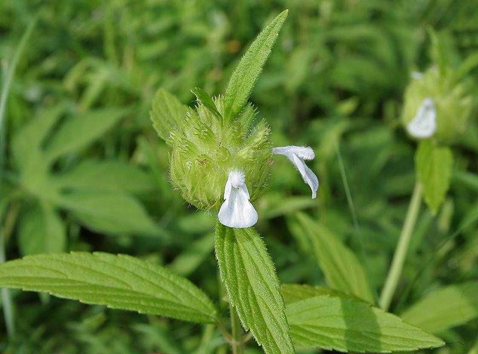

गूमाGumma
Leucas aspera · Lamiaceae · FLR-0202

- Scientific nameवैज्ञानिक नाम
- Leucas aspera (Willd.) Link
- Familyकुल
- Lamiaceae
- Hindiहिंदी
- गूमा
- Local namesस्थानीय नाम
- gumma, guma, gooma, thumbai
- Status hereयहाँ की स्थिति
- native
- Movementआवागमन
- Resident, here all year
- IUCNIUCN
- not evaluated
- Reviewसमीक्षा
- audited and independently read
When to look कब देखें
Expected mainly in June, July, August, September, October, November, December, January, February.मुख्यतः जून, जुलाई, अगस्त, सितंबर, अक्टूबर, नवंबर, दिसंबर, जनवरी, फ़रवरी में अपेक्षित।
Uses and possibilities उपयोग और संभावनाएँ
“Traditional medicine” means a documented traditional use, not a claim that it works. Nothing on this page is medical advice.
Drawn from the documented uses in the profile below, where each is labelled traditional, current or a research lead. All uses →
Tell it apart from इनसे अलग पहचानें
गूमा / Gumma
Leucas aspera (Willd.) Link — Lamiaceae
गूमा (आकन्द, नदी) — बरसात के बाद मैदानी इलाकों की उजड़ी ज़मीन पर जल्दी उगने वाली सुगंधित बूटी। तना चौकोर, लोमड़ी जैसे बालों से भरा। पत्तियाँ ख़ुरदरी, लांसदार। फूल सफेद, पतली लम्बी शाखाओं पर सघन रूप से लगे हैं। गाँव में खाँसी, बुखार, और सर्दी के लिए पारंपरिक दवाई में प्रयोग किया जाता है। मधुमक्खियों को भी बहुत आकर्षित करता है।
Quick Identification त्वरित पहचान
| Feature | Description |
|---|---|
| Stem | Square in cross-section, wiry, 30–100 cm, hispid (stiffly hairy) |
| Leaves | Lanceolate, 2–8 cm, rough, serrate margins, grayish-green |
| Flowers | White to pale pink, small (0.5–0.7 cm), densely packed on long spikes |
| Inflorescence | Terminal and axillary spikes, 5–15 cm, cylindrical, whorled |
| Smell | Aromatic, pungent, mint-like |
| Height | 30–100 cm, erect, branched above |
Field tip: An erect, square-stemmed herb with rough, lanceolate leaves, white flowers densely clustered on long cylindrical spikes, and a distinctive aromatic smell. The plant is wiry and stiff. Common on roadsides and waste ground from monsoon to winter.
Morphology आकारिकी
| Measurement | Range |
|---|---|
| Plant height | 30–100 cm |
| Leaf length | 2–8 cm |
| Leaf width | 0.8–2 cm |
| Spike length | 5–15 cm |
| Flower diameter | 0.5–0.7 cm |
Habit: Erect annual or biennial herb; 30–100 cm tall; stem square in cross-section, wiry, stiffly hairy (hispid), often reddish-tinged toward base; branched above.
Leaves: Opposite, lanceolate to oblong-lanceolate, 2–8 cm × 0.8–2 cm; both surfaces rough, with scattered stiff hairs; margins serrate (toothed); apex acute; base narrowed to short petiole; color grayish-green.
Flowers: Zygomorphic (bilaterally symmetrical), white to pale pink, small, 0.5–0.7 cm; borne in dense whorls along the spike; each whorl contains about 6–8 flowers; calyx tube campanulate, 5-toothed; corolla 2-lipped, upper lip helmet-shaped, lower lip 3-lobed; stamens 4 (didynamous); ovary 4-lobed.
Fruits: Nutlets (small seeds), 1.5–2 mm, enclosed in the calyx.
हिंदी: चौकोर, बालों वाला तना। पत्तियाँ खुरदरी, दाँतेदार। फूल सफेद, घने स्पाइक में। सुगंध वाला।
Behaviour & Ecology व्यवहार और पारिस्थितिकी
Leucas aspera is a sun-loving, pioneer annual or biennial herb of tropical South Asia, thriving in disturbed ground, roadsides, and fallow fields. The plant germinates readily in monsoon-driven soil disturbance and grows rapidly during the monsoon and post-monsoon period. The aromatic foliage, rich in essential oils, repels many herbivores.
The densely packed white flowers are highly attractive to bees, butterflies, and other pollinators. A single plant can produce hundreds of small seeds. The pungent smell, characteristic of many Lamiaceae, is due to volatile essential oils with antimicrobial and insecticidal properties.
Leucas aspera is moderately competitive in crowded stands but does not suppress major crops significantly. The plant tolerates dry soil and is often seen persisting through dry seasons if moisture is adequate.
हिंदी: उजड़ी ज़मीन में पहले आता है। मधुमक्खियों को खूब आकर्षित करता है। सुगंध कीटों को रोकती है।
Life Cycle / Phenology जीवन चक्र
| Month | Event |
|---|---|
| May–June | Seed germinates with monsoon onset; seedling emergence |
| June–August | Rapid vegetative growth; leaf expansion and branching |
| August–November | Flowering; flowers produced continuously from axils and terminals |
| September–January | Seed maturation and dispersal |
| January onwards | Plant senesces in dry season |
From germination to first flower: 6–8 weeks. Flowering extends over several months if moisture is adequate.
हिंदी: जून-जुलाई: बीज। अगस्त-नवंबर: फूल। सितंबर-जनवरी: बीज फैलाव। सूखने लगता है।
Agricultural / Human Relevance कृषि और मानव संबंध
Traditional medicine: Leucas aspera has a long history of use in Ayurvedic and folk medicine of South Asia. The whole plant or leaf decoction is traditionally used for:
- Respiratory complaints, cough, and sore throat
- Fever and general body aches
- Wounds and skin irritations (leaf paste)
- Digestive disorders
The plant is documented in classical Ayurvedic texts and Materia Medica as an expectorant and antipyretic.
Bee plant: Leucas aspera is known as a good bee forage plant, particularly in areas where other blooms are scarce. The flowers are visited extensively by honeybees and wild pollinators.
Weed status: In cultivated fields, Leucas aspera is a minor weed that does not cause significant yield loss if left to grow but is easily removed by hand-pulling or light cultivation.
Essential oils: The plant produces volatile essential oils with documented antimicrobial and insecticidal properties (modern phytochemical studies confirm saponins and terpenes).
हिंदी: खाँसी-बुखार की पारंपरिक दवाई। मधुमक्खियों के लिए फूल। खरपतवार पर कोई विशेष नुकसान नहीं।
Expected Locally स्थानीय रूप से अपेक्षित
Not a field record. Written from published accounts for eastern Uttar Pradesh. No confirmed local sighting yet — if you have seen it, that is what the atlas needs.
अभी तक स्थानीय पुष्टि नहीं। यह विवरण प्रकाशित स्रोतों से है, किसी अवलोकन से नहीं।
Leucas aspera is expected to occur on roadsides, waste ground, and fallow land in Basti district during the monsoon and post-monsoon season (June to January). The distinctive white flower spikes and aromatic smell should aid identification.
Distribution वितरण
Global range: Native to tropical Asia; distributed throughout tropical South Asia and naturalized in parts of Africa.
In India: Found throughout the country from sea level to 1,500 m elevation in the Himalayas.
In Uttar Pradesh: Common in all regions, particularly on disturbed ground and roadsides.
In Basti district / eastern UP: Common as a weedy herb on roadsides and fallow land.
Research Questions शोध प्रश्न
Anyone can investigate these | कोई भी इन प्रश्नों की जाँच कर सकता है
- How many bees visit a gumma flower spike per hour, and how long is each visit? — Observe flowers at different times; count and time bee visits.
- What is the traditional preparation of gumma for treating cough, and is it still used in local villages? / गूमा की खाँसी की दवाई गाँव में कैसे बनाई जाती है? — Interview healers and elders; document preparations.
- How many seeds does one gumma plant produce, and how far do they disperse? — Count seed heads; measure seed weight and dispersal.
- Does the essential oil of gumma leaves repel specific insects that damage crops? — Test leaf extract against common crop pests.
- Can gumma grow in waterlogged soil, or does it prefer well-drained ground? — Compare growth in wet vs. dry soils.
Similar Species मिलती-जुलती प्रजातियाँ
| Species | How to tell apart | हिंदी | |
|---|---|---|---|
| Vilayati Tulsi (Hyptis suaveolens) | Leaves larger, more coarsely serrate; flowers purple or pink, not white | पत्तियाँ बड़ी, फूल बैंगनी | |
| Ocimum sanctum ([[tulsi\ | Holy Basil]]) | Leaves smaller, different scent; flowers in lax racemes | तुलसी जैसा, गंध अलग |
Field rule: An erect, square-stemmed, hairy herb with rough lanceolate leaves and white flowers densely packed on long spikes is gumma.
Taxonomy & Classification वर्गीकरण
Original description. Originally described by Leucas aspera as Phlomis aspera Willd. (1800), later transferred to the genus Leucas by Link (1821). The genus Leucas is derived from the Greek leukos (white), referring to the white flowers. The specific name aspera means "rough," referring to the rough leaf surface.
Subspecies. Monotypic — no subspecies are currently recognised.
Family and order placement. Lamiaceae (Mint family), order Lamiales. The family includes basils, thymes, mints, and other aromatic herbs.
Phylogenetic notes. Leucas aspera is closely related to L. martiflora and other Asian Leucas species.
IUCN status rationale. Not evaluated. Widespread and stable; not assessed for conservation.
Photo Gallery फोटो गैलरी
Photos needed आवश्यक फोटो
- [ ] Full plant in field or roadside (पूरा पौधा)
- [ ] Flower spike detail showing whorled arrangement (फूलों की व्यवस्था)
- [ ] Close-up of white flowers (सफेद फूल)
- [ ] Rough leaves (खुरदरी पत्तियाँ)
No photos yet — add field photos to media/species/gumma/ and run node scripts/sync_photos.js.
References संदर्भ
- Willd. (1800). Enumeratio Plantarum Horti Berolinensis, Vol. 1. Berlin.
- Link, H.F. (1821). Enumeratio Plantarum Horti Regii Berolinensis. Berlin.
- Hooker, J.D. (1885). Flora of British India, Vol. 4. L. Reeve & Co., London.
- Kirtikar, K.R. & Basu, B.D. (1935). Indian Medicinal Plants, Vol. 2. Lalit Mohan Basu, Allahabad.
- Botanical Survey of India. State Flora Series: Flora of Uttar Pradesh. BSI, Kolkata.
- GBIF Occurrence Data — Leucas aspera, India (2024–2026).
Source file: species/flora/weeds/gumma.md